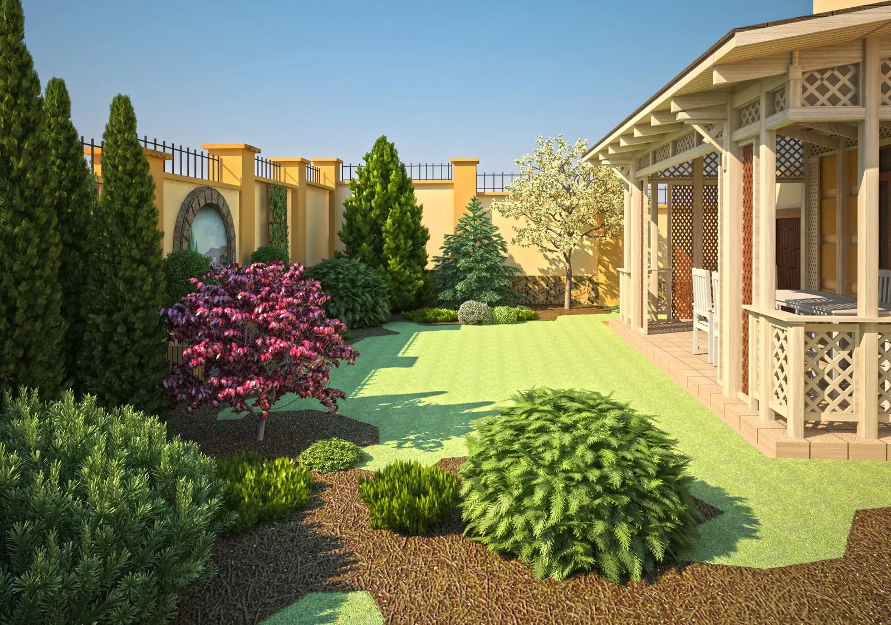

Ландшафтное проектирование 2 мин чтения
Модный ландшафтный дизайн в Молдове
Мастерская SavTed

Озеленение и благоустройство придомового участка — яркий и необходимый штрих, завершающий картину вашей жилой среды.
К созданию художественного образа сада, на наш взгляд, следует подходить ответственно — с учётом масштаба и значимости объекта. Реализованный ландшафтный проект просто так не заменишь, как, например, надоевшую мебель в интерьере.
Ландшафтный дизайн — это искусство, объединяющее разные области знаний: архитектуру, строительство и проектирование, ботанику и растениеводство. Оно требует особого мастерства и творческой интуиции. Поэтому старайтесь заказывать эту услугу у профессиональных дизайнеров-художников, способных создать полноценный дизайн-проект ландшафта.
Большинство фирм, которые предлагают «ландшафтный дизайн» в Кишинёве, к нему отношения не имеют: они занимаются в основном продажей завезённых в Молдову растений и реже — их высадкой (обычно это техническая, реже декоративно-оформительская работа). Поэтому ошибиться очень легко.
Бытует мнение, что ландшафтный дизайн — это простая расстановка растений на участке. Возразим: не простая. Она требует знания садово-парковой композиции, дендрологии, стилей обустройства архитектурной среды и многого другого. Мы искренне считаем, что создать красивый и оригинальный сад или парк может только человек, который в душе и в жизни — художник.
Из чего состоит дизайн-проект
Ландшафтный дизайн — в Молдове, как и в других странах, — включает целый комплекс проектных и творческих работ, которые предшествуют озеленению и сопровождают его.
Полноценный дизайн-проект начинается с концепции архитектурной среды участка — с учётом стилистики существующих построек и мнения владельца. На этом этапе предлагаются варианты планировки: где будут зоны (автостоянка, детская площадка, место отдыха и т. п.), как террасировать склоны, если нужно, где пройдут дорожки, где разместятся клумбы и другие садово-парковые элементы.
Отдельно обсуждаются и проектируются малые архитектурные формы: беседки, фонтаны, искусственные водоёмы, бассейны, водопады, альпинарии, фасады заборов и т. п.
Дальше рассматриваются варианты компоновки растений с их названиями — это и есть проект озеленения. От согласованной планировки, видов растений и расположения газона зависят проект освещения и система автоматического полива.
Кроме художников-дизайнеров, в проектировании могут участвовать профильные инженеры — например, при расчёте подпорных стенок, фундаментов беседок, несущих конструкций и кровель, при устройстве водоёмов, электрики и т. д.
Реально, в срок и по сезону
Предложенный дизайн-проект всегда адаптирован к реальности и выполним в натуре. Все растения и материалы можно купить в Молдове. Мы также разрабатываем варианты экономической оптимизации проекта.
Полный проект выполняется в среднем за месяц. Высаживать растения можно два раза в год — весной и осенью.
Проектирование озеленения и обустройства территории — процесс сложный и небыстрый, а у посадки растений и газона есть сезоны. Поэтому настоятельно рекомендуем заказать дизайн-проект ландшафта вашего участка заблаговременно.